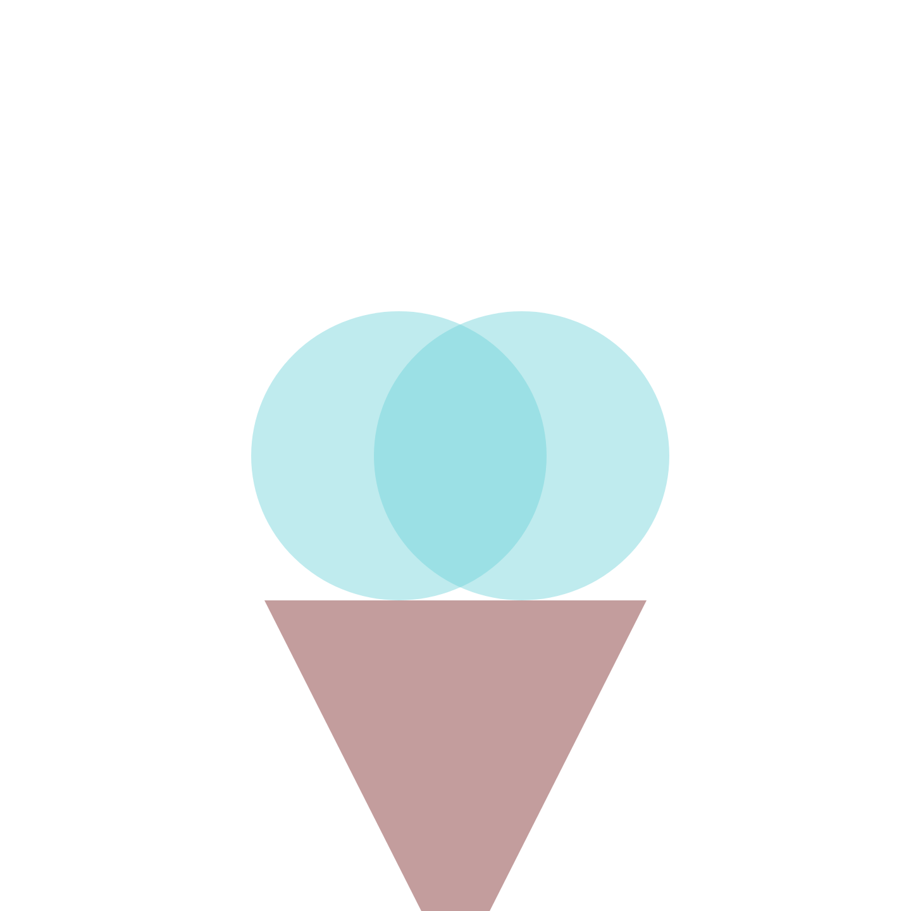
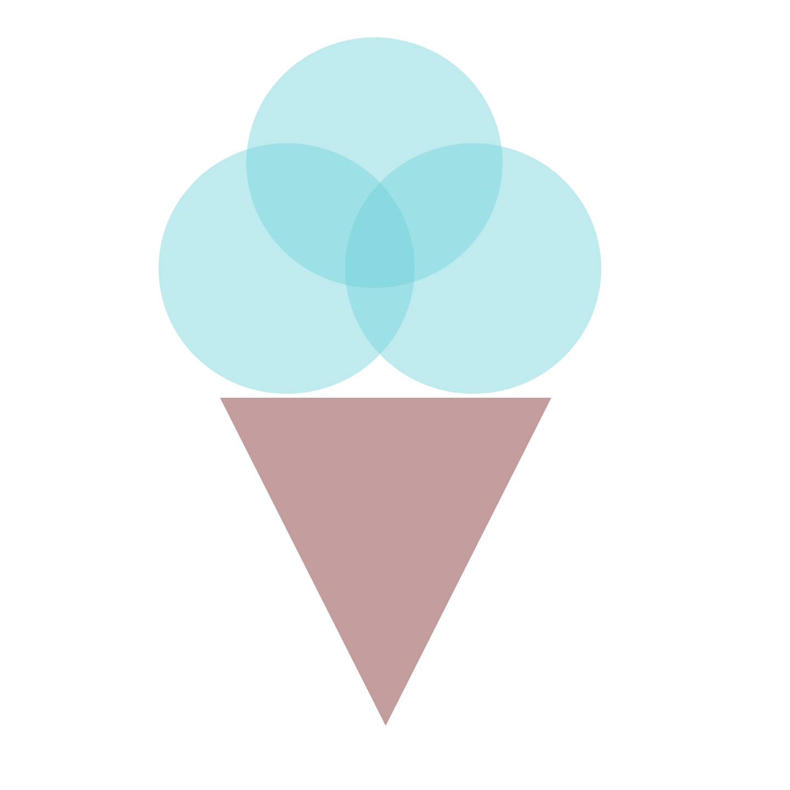

- open XD
- create a document that is 1440px by 1440px
- create a circle that is 467px by 457px and place it at the center top of the page
- change the color of the circle to hex #6FD1D9 at 44% opacity and remove the border color
- duplicate this circle twice by clicking copy paste (or option then drag it)
- place the second circle overlapping the bottom left part of the first circle
- place the third circle overlapping the bottom right part of the first circle. it should now look similar to a venn diagram
- create an upside down triangle that is 604px (width) and 598px (height) and place it underneath (but not touching) the second and third circle
- change the color of the triangle to hex #C39D9D at 100% opacityy and remove the border color
- export the file by clicking file - export - all artboards - format: png
- send it to me at tleblan@masonlive.gmu.edu !!
Recreation

Original
